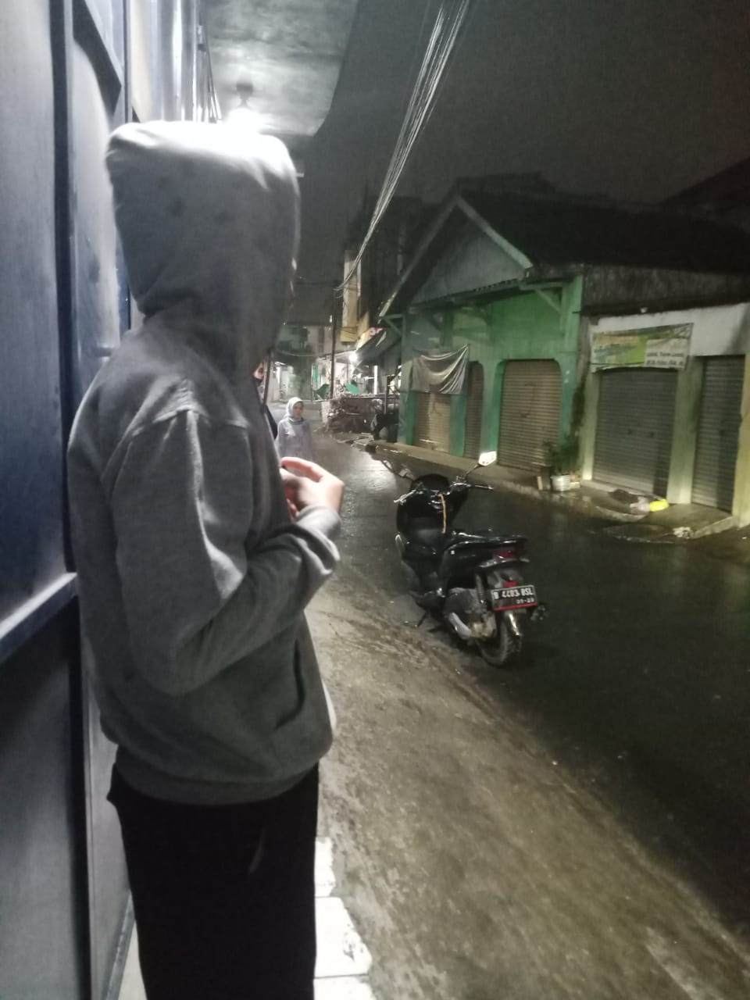
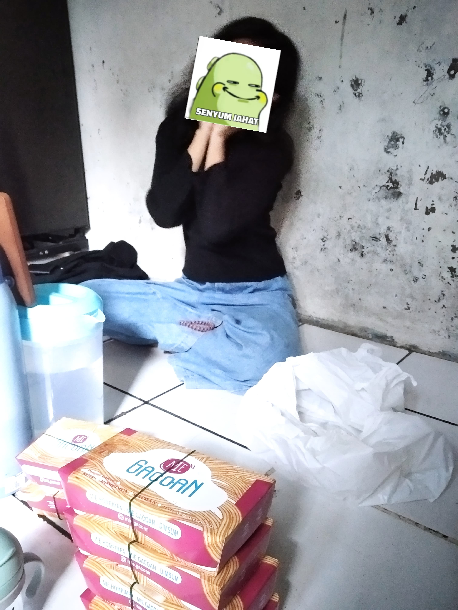
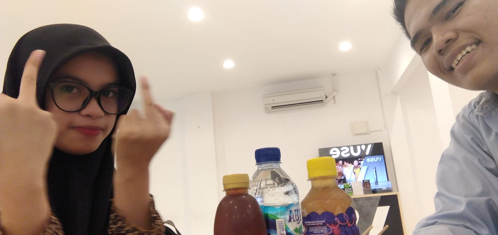
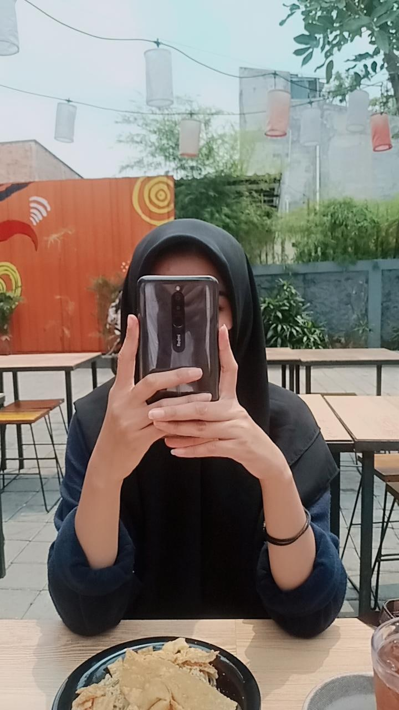
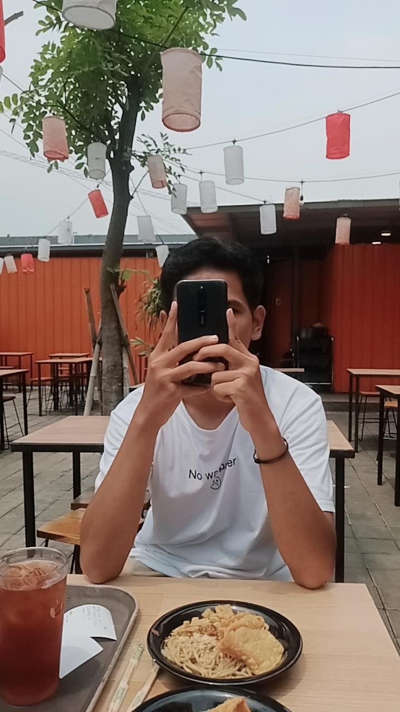
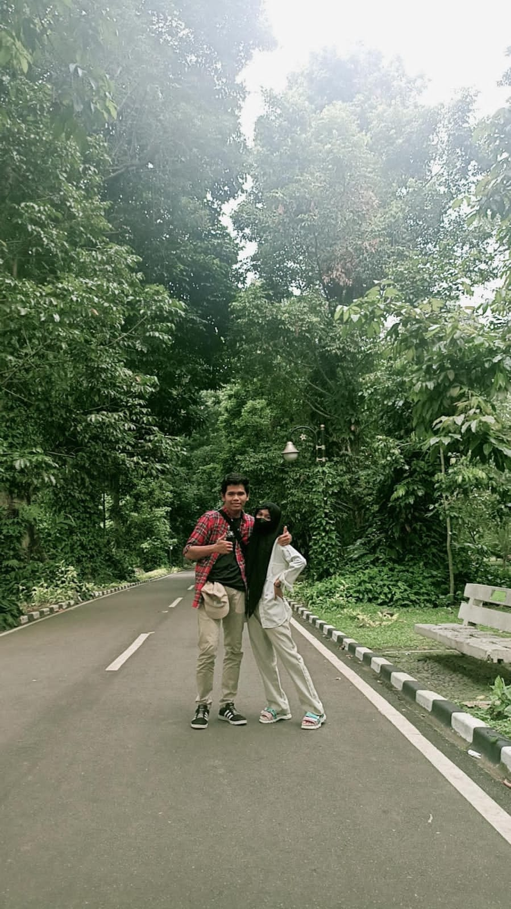
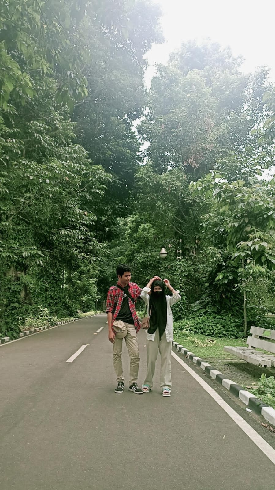
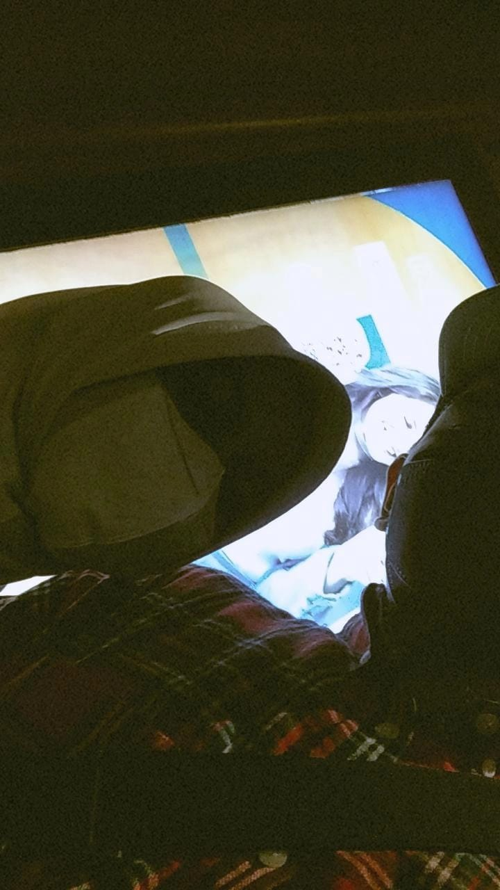
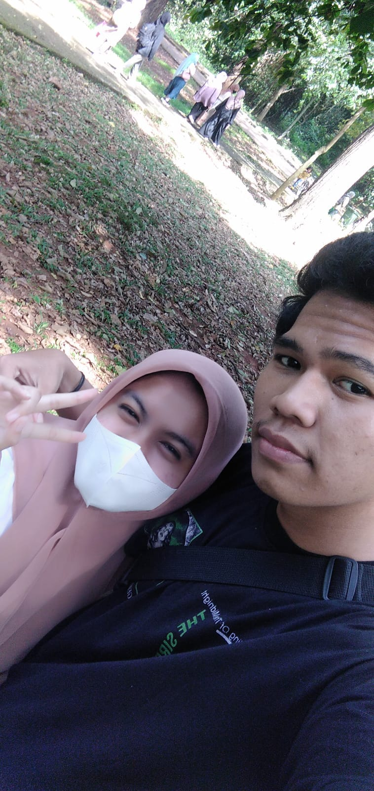
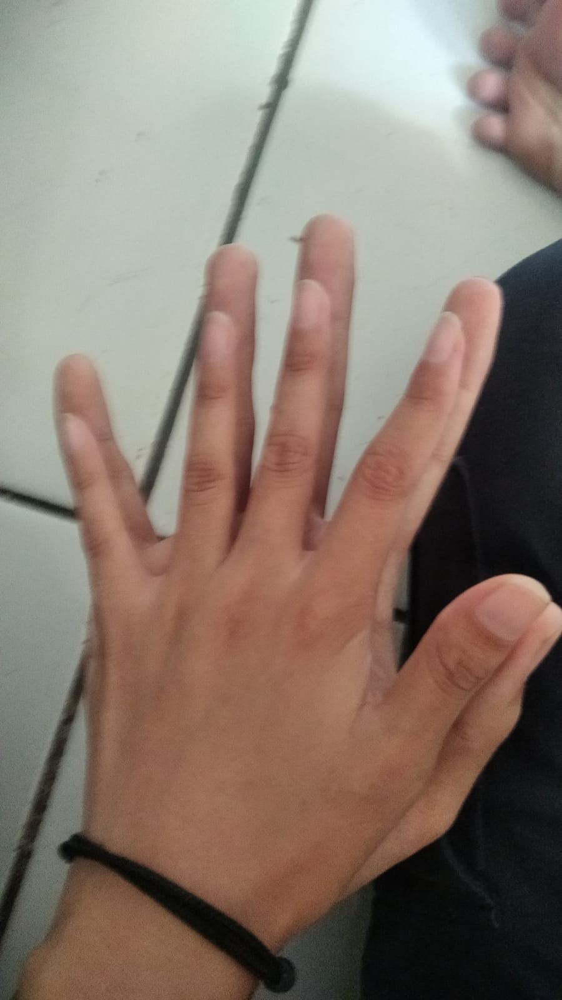

sudah hampir 3 tahun kita selalu bersama dan aku harap kita bisa terus bersama. banyak juga ya cobaan yg kita hadapi tetapi ga membuatku menyerah untuk terus selalu didekatmu :3S
Hujan Menjadi Saksi
Hujan menjadi saksi bahwa betapa bahagianya kita ketika sedang bersama.

Yang Penting Makan
Meskipun setiap makanan berbeda rasa tetapi cintaku padamu tidak akan pernah berubah ko xixi.




Healing Bareng Kamu
Sudah banyak tempat yang telah kita kunjungi tapi menurutku tempat ternyaman ya bersama kamu.
Monas

Bogor 16-10-2022

Bogor 16-10-2022

Bioskop 30-09-2022

Ragunan 07-09-2023

Siapa Kami?
Kami adalah 2 buah insan yang berbeda mulai dari sifat, pikiran, hingga perilaku. meskipun kita mempunyai perbedaan yg banyak itu bukan menjadi habatan untuk kita tetap bersama.